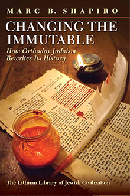
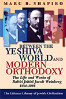

Changing the Immutable
How Orthodox Judaism Rewrites Its History
A consideration of how segments of Orthodox society rewrite the past by eliminating that which does not fit in with their contemporary world-view. This wide-ranging and original review of how this policy is applied in practice adds a new perspective to Jewish intellectual history and to the understanding of the contemporary Jewish world.
More info
Changing the Immutable focuses on how segments of Orthodox society have taken upon themselves to rewrite the past, by covering up and literally cutting out that which does not fit in with their contemporary world-view. For reasons ranging from theological considerations to internal religious politics to changing religious standards, such Jewish self-censorship abounds, and Marc Shapiro discusses examples from each category, In a number of cases the original text is shown alongside how it looked after it was censored, together with an explanation of what made the text problematic and how the issue was resolved.
The author considers how some Orthodox historiography sees truth as entirely instrumental. Drawing on the words of leading rabbis, particularly from the haredi world, he shows that what is important is not historical truth, but a 'truth' that leads to observance and faith in the sages. He concludes with a discussion of the concept of truth in the Jewish tradition, and when this truth can be altered.
Changing the Immutable also reflects on the paradox of a society that regards itself as
traditional, but at the same time is uncomfortable with much of the inherited tradition and
thus feels the need to create an idealized view of the past. It considers this practice in
context, showing the precedents for this in Jewish history dating back to talmudic times.
Since the subjects of censorship have included such figures as Maimonides, Bahya ibn
Pakuda, Rashi, Naphtali Herz Wessely, Moses Mendelssohn, the Hatam Sofer, Samson
Raphael Hirsch, the Lubavitcher Rebbe, A. I. Kook, and J. B. Soloveitchik, as well as issues
such as Zionism, biblical interpretation, and attitudes to women and gentiles, Changing the
Immutable also serves as a study in Jewish intellectual history and how the ideas of one era
do not always find favour with future generations.
About the author
Marc B. Shapiro holds the Harry and Jeanette Weinberg Chair in Judaic Studies at the University of Scranton, Pennsylvania. A graduate of Brandeis and Harvard universities, he is the author of Between the Yeshiva World and Modern Orthodoxy: The Life and Works of Rabbi Jehiel Jacob Weinberg, 1884-1966 (1999) and The Limits of Orthodox Theology: Maimonides' Thirteen Principles Reappraised (2004), both published by the Littman Library.
Contents
Note on Transliteration
1 Introduction
2 Jewish Thought
3 Halakhah
4 Rabbi Samson Raphael Hirsch
5 Rabbi Abraham Isaac Kook
6 Sexual Matters and More
7 Other Censored Matters
8 When Can One Lie?
Bibliography
Index
Reviews
‘A thought-provoking if not provocative study . . . an invaluable addition to collections concerned with Jewish intellectual history.’
Randall C. Belinfante, Association for Jewish Libraries Reviews
‘Shapiro’s scholarship has been so important, in part because of Orthodoxy’s own success at covering up inconvenient aspects of its past.’
Ezra Glinter, Forward (also published in Haaretz)
‘Professor Shapiro is a meticulous, knowledgeable, and sometimes unconventional scholar. He attempts to demonstrate and to analyse how God-fearing writers and printers through the ages . . . “correct” texts or historical accounts so as to present them as they should have been rather than as they actually were . . . The bibliography and extensive indexes cover scores of pages. Professor Shapiro’s diligence has produced most interesting and praiseworthy results.’
Hama’ayan
‘An encyclopedic discussion of the complex evolutionary processes involved in creating and shaping Jewish tradition . . . The book is a cri de coeur, suggesting that truth should be a timeless commodity. Yet, the nook has another, larger meaning. It outlines how Jewish tradition, a highly decentralized and in a modest way, a plastic entity, is shaped and changed.’
Susan M. Chambré, Jewish Book Council Reviews
‘Another significant achievement for Professor Shapiro . . . a fascinating—and for Shapiro, typically exhaustive—presentation of literary, photographic, and political examples of self-censorship within the Orthodox world . . . his work is unique in that it offers a comprehensive, structured compilation of examples side-by-side with an evaluation of the underlying motivations . . . a fascinating and readable work, a touch polemical in places, yet a worthy addition to a modern Jewish library.’
Harvey Belovski, Jewish Chronicle
‘I can attest to the rigour and transparency of his scholarship. With his most recent work Changing the Immutable, he has once again rocked the Jewish community with his erudition and brilliant scholarship . . . [he] explores with impeccable details twentieth-century attempts by some parts of the ultra-Orthodox world to re-shape history to fit their own religious ideologies . . . a must read for all who want to understand how the current “slide to the right” is radically reforming Judaism to fit within the cacophonous landscape of contemporary values . . . Shapiro has given readers a snapshot for understanding the Orthodox world of today, allowing them to grapple with a problem that is long overdue and urgently needs to be addressed.’
Shmuly Yanklowitz, Jewish Journal
‘One of the most popular and controversial writers in the Modern Orthodox world today, most famous perhaps for publicizing little-known—and often radical—positions in Jewish law and thought.’
Elliott Resnick, Jewish Press
‘Remarkably erudite . . . fascinating and remarkably learned.’
Allan Nadler, Jewish Review of Books
‘The outstanding product of a master of rabbinic literature and an extraordinarily sharp-eyed and meticulous scholar. The book should be accessible to the widest possible readership, including traditionalists.'
Adam Ferziger, Marginalia: Los Angeles Review of Books
‘An impressive work of detailed and seminal scholarship . . . a major contribution to Judaic studies and is highly recommended to as a critically important addition to synagogue and academic reference collections and supplemental reading lists.’
Micah Andrew, Midwest Book Review
‘An outstanding work’
Fred Reiss, San Diego Jewish World
‘Fascinating . . . meticulous.’
Jack Riemer, South Florida Jewish Journal
‘Fascinating and well researched.’
Ben Rothke, Times of Israel
‘On rare occasions, academics manage to cross over and speak to those who live outside the ivory tower, and nobody in the contemporary Modern Orthodox intellectual scene does that better than Marc B. Shapiro . . . important contribution which Shapiro makes not only to scholarship on Orthodoxy's treatment of its sacred literature, but to the public conversation that he has started about what we, as observant Jews, expect from our teachers, authors, and publishers. These are crucial matters, and Shapiro's skill at pushing the community to address them exemplifies the contribution that academic scholarship can make to the public good.’
Yoel Finkelman, Tradition

360 pages, 71 illustrations
£24.95 / $39.95 hardback
ISBN: 978-1-904113-60-7
21 May 2015
Other books by this author:

Between the Yeshiva World and Modern Orthodoxy
The Life and Works of Rabbi Jehiel Jacob Weinberg, 1884-1966

The Limits of Orthodox Theology
Maimonides' Thirteen Principles Reappraised